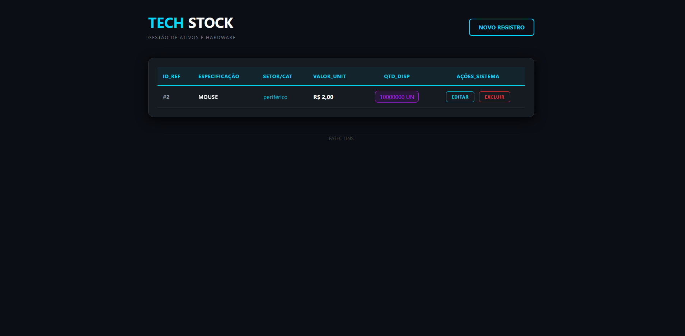
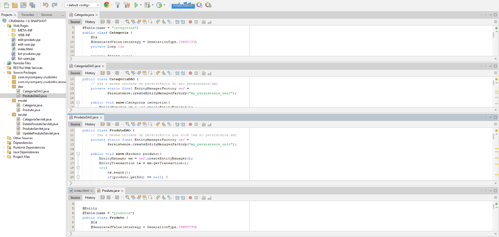

CRUD Utilizando Java

O projeto consistiu na implementação de um módulo de gerenciamento de dados web baseado na arquitetura CRUD (Create, Read, Update, Delete), com o objetivo de entregar uma aplicação robusta e escalável no lado do servidor. Para estruturar o back-end, foi utilizado o Java, linguagem de alto nível orientada a objetos e amplamente adotada no mercado para o desenvolvimento de sistemas corporativos seguros. Paralelamente, a interface gráfica (front-end) foi construída utilizando o Bootstrap, framework open-source focado no design responsivo, garantindo uma experiência fluida e otimizada para diferentes tamanhos de tela.


A estrutura de código foi desenvolvida seguindo os padrões orientados a objetos, garantindo a separação limpa de responsabilidades entre as camadas de persistência e regras de negócio. O uso de IDEs avançadas permitiu a integração fluida com o ecossistema Java, resultando num código coeso, de fácil manutenção e preparado para expansões futuras.
A estruturação técnica do módulo de manutenção exigiu o domínio do paradigma de Orientação a Objetos e a orquestração de múltiplas tecnologias:
A lógica de processamento no servidor foi programada em Java. Envolveu a criação de classes de modelo para representar os dados, controladores para gerenciar as requisições HTTP vindas do navegador, e classes de acesso a dados (DAO - Data Access Object) para isolar as regras de persistência.
A aplicação Java foi configurada para se conectar a um Sistema Gerenciador de Banco de Dados e disparar ativamente as queries SQL de inserção, leitura, atualização e exclusão, parametrizando dinamicamente os dados recebidos.
A interface de interação do usuário foi estruturada com HTML e estilizada utilizando o framework Bootstrap. Isso permitiu a construção ágil de uma interface visual padronizada, contemplando tabelas de listagem de registros, telas de confirmação e formulários limpos para a captura das informações.